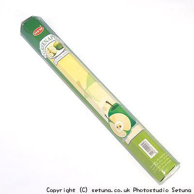

ヘム社/グリーンアップル
HEM GREEN APPLE
箱の外からだと、青リンゴ。
直接匂うと青リンゴというにはちょっと抵抗のある匂いが・・・
火を点けると青臭く、焼いたセロリの様な匂いが・・・(涙)
このまま長時間焚き続ける忍耐力が私にはありません・・・・
カモマイル、バニラ、スパイスと同化しやすく、香りを甘くする傾向があります。
また、グリーン系の香りをアップさせ、一部のフローラル系の煙を押さえて、甘い香りを強く押し出す作用を持ちます。
オレンジ系にはあまり合いませんが、一緒に配合されている香油によりけりで、よい匂いになるものもあります。
ムスク系、乳香などの香りは、負けてしまいますので、一緒に焚かない方がいいと思います。
研究対象としては、とても面白いお香なのですが単品で楽しめるものではないと思いますので、初めての人にはあまりお勧めしたくないお香の一つですね。

＜焚き合わせできるお香＞
- 「マグノリア香」
- 甘く優しいフローラル＋バニラ系に変化します。いい匂いだと思いますので両方お持ちの場合は使ってみるといいと思います。
- 「エジプシャンジャスミン香」
- 甘めのラベンダーの香りに・・・
- 「アーモンド香」
- 美味しそうなナッツ系の香りに・・・
- 「ロータス香」
- 双方がすごい匂いの代表みたいなお香ですが、一緒に焚く事でロータスがふんわりとしたいい匂いに変化します。
- 「シバ香」
- 白花系のいい香りに・・・
- 「サラスワティ香」
- 青苦さが消えグリーンベースの香水の様に・・・
- 「パワー香」
- パワー香のキツい感じが薄れ、少し優しい感じの甘い香りが添加されます。
- 「ハヌマン香」
- より甘い香りに変化します・・・
- 「ガネーシャ香」
- スパイシーさが消え、甘い「焼きみかん」の香りが漂います・・・(おなかが減ります。)
一つ前のページへ戻る